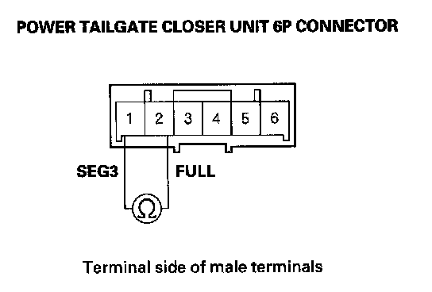
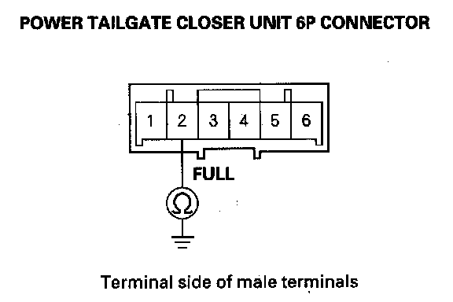
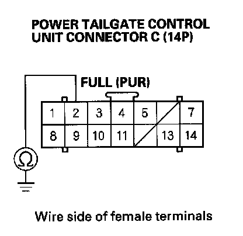
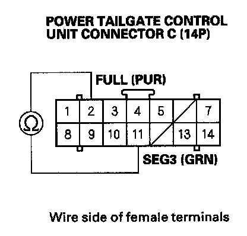
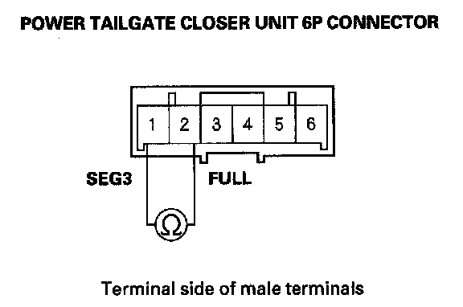

B1382
DTC B1382: Power Tailgate Closer Unit Full Latch Switch Circuit Malfunction1. Open the tailgate with the tailgate outer handle.
2. Close the tailgate manually.
3. Turn the ignition switch OFF, and then back ON (II).
4. Clear the DTCs with the HDS.
5. Check for the DTCs with the HDS.
Is DTC B1382 indicated?
YES - Go to step 6.
NO - Intermittent failure, the system is OK at this time. Check for loose or poor connections between the power tailgate control unit and the power tailgate closer unit.
6. Open the tailgate with the tailgate outer handle.
7. Turn the ignition switch OFF.
8. Turn the tailgate lock latch to the fully-closed position using a screwdriver.
9. Disconnect the 6P connector from the power tailgate closer unit.

10. Check for continuity between the power tailgate closer unit 6P connector No. 1 and No. 2 terminals.
Is there continuity?
YES - Faulty full latch switch, replace the power tailgate closer unit.
NO - Go to step 11.

11. Check for continuity between the power tailgate closer unit 6P connector No. 2 terminal and body ground.
Is there continuity?
YES - Replace the tailgate closer unit.
NO - Go to Step 12.
12. Disconnect the power tailgate control unit connector C (14P).

13. Check for continuity between the power tailgate control unit connector C (14P) No. 2 terminal and body ground.
Is there continuity?
YES - Repair short to ground in the wire between the power tailgate control unit and the rear fuse/relay box or between the rear fuse/relay box and the power tailgate closer unit. If the wire harness are OK, replace the MICU-rear junction box.
NO - Go to step 14.
14. Turn the tailgate emergency lever to release the tailgate lock latch from the fully-locked position to release position.

15. Check for continuity between the power tailgate control unit connector C (14P) No. 2 and No. 11 terminals.
Is there continuity?
YES - Replace the power tailgate control unit.
NO - Go to step 16.
16. Disconnect the 6P connector from the power tailgate closer unit.

17. Check for continuity between the power tailgate closer unit 6P connector No. 1 and No. 2 terminals.
Is there continuity?
YES - Repair open in the wire between the power tailgate closer unit and power tailgate control unit.
NO - Replace the power tailgate closer unit.